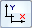

Hole Table command bar
- Table Style
-
Lists and applies the available table styles.
See the Help topic, Table styles.
- Hole Selection Method
-
Specifies the method used to select holes to include in the table.
- By Drawing View
-
Creates a table from all of the holes in the selected drawing view of the model. All hole features in the view are selected; they do not have to be visible.
Use the this method when a model contains hole features created with the Hole command. This method does not recognize cutouts or 2D circular geometry.
- By User Selection
-
Creates a table from the holes you manually select on the active sheet.
Select this option for any of the following conditions:
-
You want to create a table from a subset of holes in a drawing view.
-
You are using different origins to define hole locations.
-
The drawing view that contains holes created as cutouts rather than hole features.
-
The drawing view contains 2D circle and arc geometry.
-
- Define Origin Step

-
Defines the zero X and Y coordinates for the origin of the hole table. You can define multiple origins for the hole table.
Example:
- Origin List
-
Displays a list of hole table origins used in the selected table.
When creating a hole table using multiple origins, specifies the origin to use to locate the next set of holes that you select.
- Select Features

-
Specifies that only 3D hole feature geometry can be located for selection, not sketch geometry.
This includes hole features created with the Hole command, and hole patterns created with the Pattern commands.
- Select Geometry

-
Specifies that 2D geometry consisting of circles and arcs can be located for selection.
The following options aid in selecting geometry when using fence selection:
- Arc Locate

-
Locates arc geometry when you drag a box to select geometry.
- Concentric Locate

-
Locates all of the concentric circles that represent counterbore, countersink, and threaded holes when you drag a box to select geometry. It also locates multiple concentric sketch circles.
When this option is deselected, only the smallest (innermost) circle in a set of concentric circles is located.
- Arc Locate
- Add or Remove Holes Step

-
When this step is active, you can select the hole geometry you want to include in the hole table.
You also can use this option to add or remove holes from an existing table. When the Hole Table Selection Method used to create the table initially was By User Selection, you can add or remove individual holes from the selection set using Shift+click.
- Properties
-
Displays the Hole Table Properties dialog box where you can set hole table options for the content and appearance of the hole table. You can also save hole table settings for reuse.
- Saved Settings
-
 Lists and applies the names of table formats you have saved.Tip:
Lists and applies the names of table formats you have saved.Tip:You can define new table formats on the General page of the Hole Table Properties dialog box.
How do I
Create a hole tableChange hole table labels
Define a smart hole table callout column
Hide the hole table origin
Show hole size tolerance
Learn more
Hole tablesAdding hole table columns
Look up more details
Hole Table commandHole Table Properties dialog box
Options tab (Hole Table Properties dialog box)
Hole Number tab (Hole Table Properties dialog box)
Callout tab
Smart Depth tab
Units tab (Hole Table Properties dialog box)